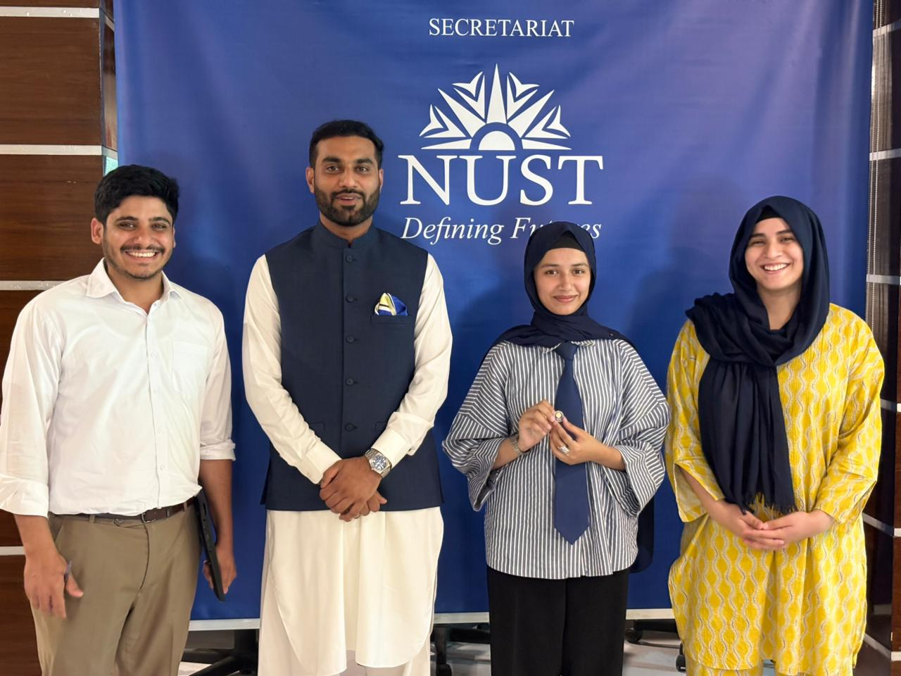
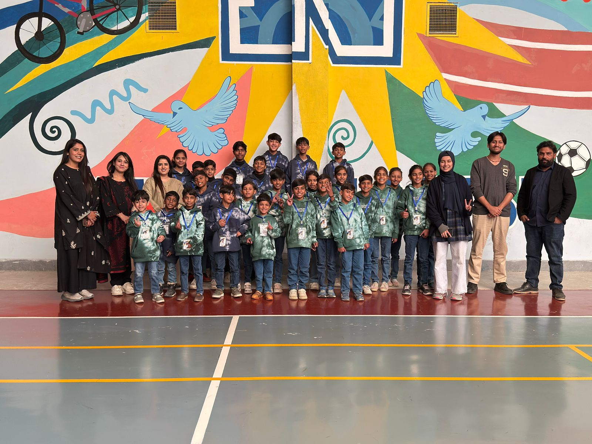
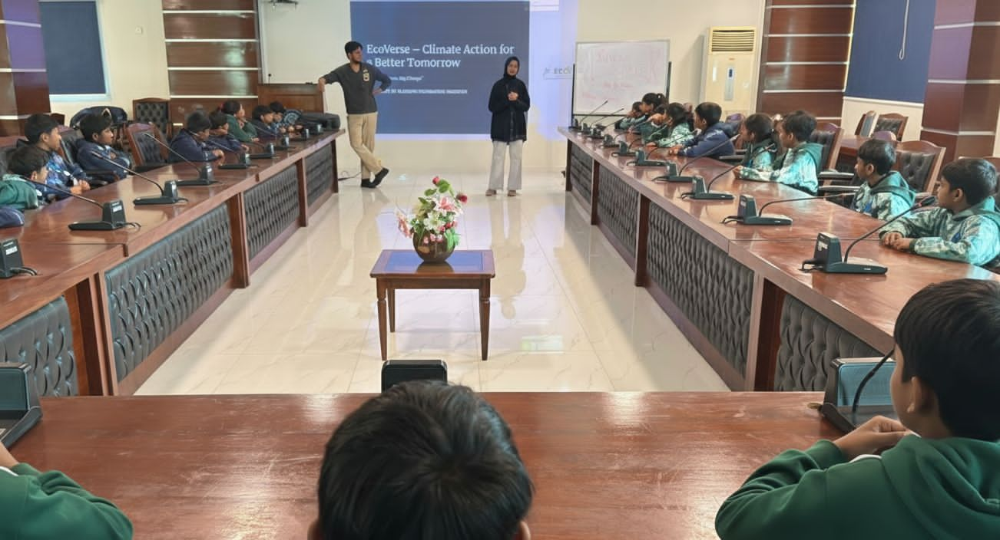
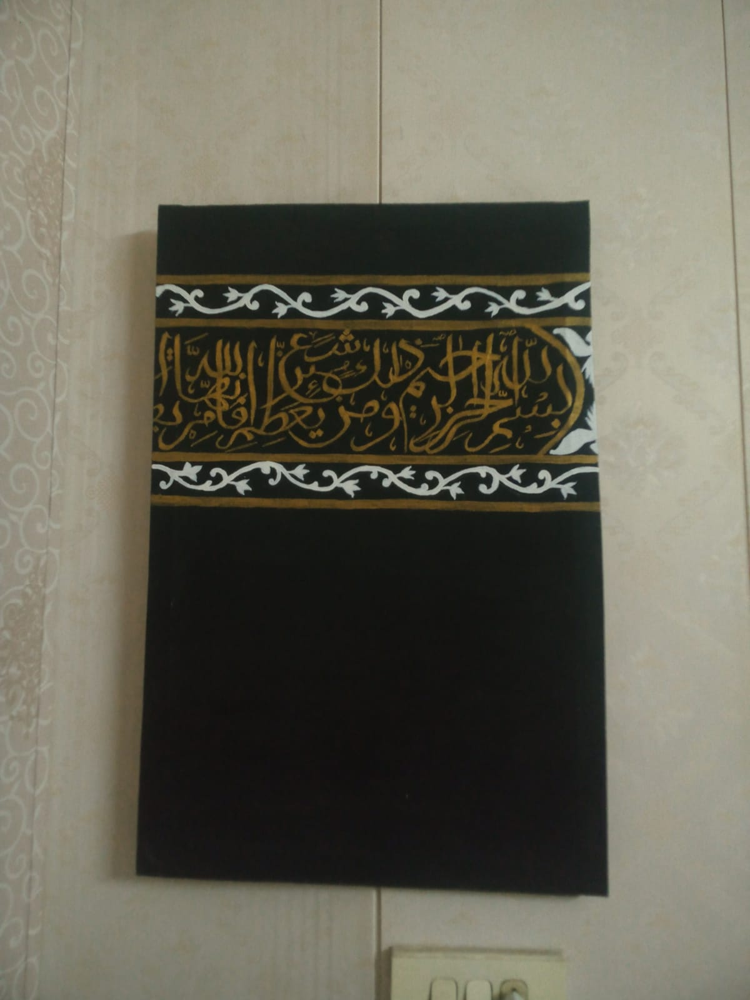
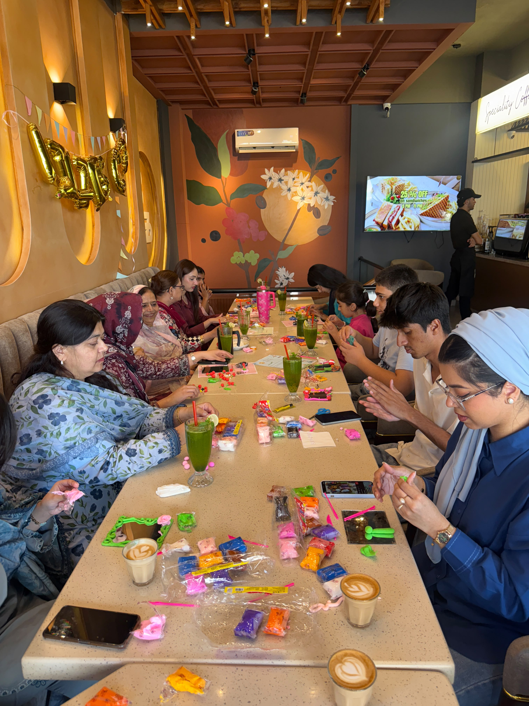

GALLERY / 01
My Journey in Pictures
A collection of moments from my professional, academic, creative, and personal journey. These experiences reflect my involvement in leadership, volunteering, learning, and creative activities beyond the classroom.




